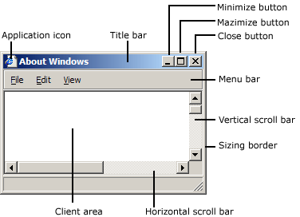

This topic describes the programming elements that applications use to create and use windows; manage relationships between windows; and size, move, and display windows.
The overview includes the following topics.
When you start the system, it automatically creates the desktop window. The desktop window is a system-defined window that paints the background of the screen and serves as the base for all windows displayed by all applications.
The desktop window uses a bitmap to paint the background of the screen. The pattern created by the bitmap is called the desktop wallpaper. By default, the desktop window uses the bitmap from a .bmp file specified in the registry as the desktop wallpaper.
The GetDesktopWindow function returns a handle to the desktop window.
A system configuration application, such as a Control Panel item, changes the desktop wallpaper by using the SystemParametersInfo function with the wAction parameter set to SPI_SETDESKWALLPAPER and the lpvParam parameter specifying a bitmap file name. SystemParametersInfo then loads the bitmap from the specified file, uses the bitmap to paint the background of the screen, and enters the new file name in the registry.
Every graphical Windows-based application creates at least one window, called the main window, that serves as the primary interface between the user and the application. Most applications also create other windows, either directly or indirectly, to perform tasks related to the main window. Each window plays a part in displaying output and receiving input from the user.
When you start an application, the system also associates a taskbar button with the application. The taskbar button contains the program icon and title. When the application is active, its taskbar button is displayed in the pushed state.
An application window includes elements such as a title bar, a menu bar, the window menu (formerly known as the system menu), the minimize button, the maximize button, the restore button, the close button, a sizing border, a client area, a horizontal scroll bar, and a vertical scroll bar. An application's main window typically includes all of these components. The following illustration shows these components in a typical main window.

The client area is the part of a window where the application displays output, such as text or graphics. For example, a desktop publishing application displays the current page of a document in the client area. The application must provide a function, called a window procedure, to process input to the window and display output in the client area. For more information, see Window Procedures.
The title bar, menu bar, window menu, minimize and maximize buttons, sizing border, and scroll bars are referred to collectively as the window's nonclient area. The system manages most aspects of the nonclient area; the application manages the appearance and behavior of its client area.
The title bar displays an application-defined icon and line of text; typically, the text specifies the name of the application or indicates the purpose of the window. An application specifies the icon and text when creating the window. The title bar also makes it possible for the user to move the window by using a mouse or other pointing device.
Most applications include a menu bar that lists the commands supported by the application. Items in the menu bar represent the main categories of commands. Clicking an item on the menu bar typically opens a pop-up menu whose items correspond to the tasks within a given category. By clicking a command, the user directs the application to carry out a task.
The window menu is created and managed by the system. It contains a standard set of menu items that, when chosen by the user, set a window's size or position, close the application, or perform tasks. For more information, see Menus.
The buttons in the upper-right corner affect the size and position of the window. When you click the maximize button, the system enlarges the window to the size of the screen and positions the window, so it covers the entire desktop, minus the taskbar. At the same time, the system replaces the maximize button with the restore button. When you click the restore button, the system restores the window to its previous size and position. When you click the minimize button, the system reduces the window to the size of its taskbar button, positions the window over the taskbar button, and displays the taskbar button in its normal state. To restore the application to its previous size and position, click its taskbar button. When you click the close button, the application exits.
The sizing border is an area around the perimeter of the window that enables the user to size the window by using a mouse or other pointing device.
The horizontal scroll bar and vertical scroll bar convert mouse or keyboard input into values that an application uses to shift the contents of the client area either horizontally or vertically. For example, a word-processing application that displays a lengthy document typically provides a vertical scroll bar to enable the user to page up and down through the document.
An application can create several types of windows in addition to its main window, including controls and dialog boxes.
A control is a window that an application uses to obtain a specific piece of information from the user, such as the name of a file to open or the desired point size of a text selection. Applications also use controls to obtain information needed to control a particular feature of an application. For example, a word-processing application typically provides a control to let the user turn word wrapping on and off. For more information, see Windows Controls.
Controls are always used in conjunction with another window—typically, a dialog box. A dialog box is a window that contains one or more controls. An application uses a dialog box to prompt the user for input needed to complete a command. For example, an application that includes a command to open a file would display a dialog box that includes controls in which the user specifies a path and file name. Dialog boxes do not typically use the same set of window components as does a main window. Most have a title bar, a window menu, a border (non-sizing), and a client area, but they typically do not have a menu bar, minimize and maximize buttons, or scroll bars. For more information, see Dialog Boxes.
A message box is a special dialog box that displays a note, caution, or warning to the user. For example, a message box can inform the user of a problem the application has encountered while performing a task. For more information, see Message Boxes.
An application must provide the following information when creating a window. (With the exception of the Window Handle, which the creation function returns to uniquely identify the new window.)
These window attributes are described in the following sections.
Every window belongs to a window class. An application must register a window class before creating any windows of that class. The window class defines most aspects of a window's appearance and behavior. The chief component of a window class is the window procedure, a function that receives and processes all input and requests sent to the window. The system provides the input and requests in the form of messages. For more information, see Window Classes, Window Procedures, and Messages and Message Queues.
A window name is a text string that identifies a window for the user. A main window, dialog box, or message box typically displays its window name in its title bar, if present. A control may display its window name, depending on the control's class. For example, buttons, edit controls, and static controls displays their window names within the rectangle occupied by the control. However, controls such as list boxes and combo boxes do not display their window names.
To change the window name after creating a window, use the SetWindowText function . This function uses the GetWindowTextLength and GetWindowText functions to retrieve the current window-name string from the window.
Every window has one or more window styles. A window style is a named constant that defines an aspect of the window's appearance and behavior that is not specified by the window's class. An application usually sets window styles when creating windows. It can also set the styles after creating a window by using the SetWindowLong function.
The system and, to some extent, the window procedure for the class, interpret the window styles.
Some window styles apply to all windows, but most apply to windows of specific window classes. The general window styles are represented by constants that begin with the WS_ prefix; they can be combined with the OR operator to form different types of windows, including main windows, dialog boxes, and child windows. The class-specific window styles define the appearance and behavior of windows belonging to the predefined control classes. For example, the SCROLLBAR class specifies a scroll bar control, but the SBS_HORZ and SBS_VERT styles determine whether a horizontal or vertical scroll bar control is created.
For lists of styles that can be used by windows, see the following topics:
Every window can optionally have one or more extended window styles. An extended window style is a named constant that defines an aspect of the window's appearance and behavior that is not specified by the window class or the other window styles. An application usually sets extended window styles when creating windows. It can also set the styles after creating a window by using the SetWindowLong function.
For more information, see CreateWindowEx.
A window's position is defined as the coordinates of its upper left corner. These coordinates, sometimes called window coordinates, are always relative to the upper left corner of the screen or, for a child window, the upper left corner of the parent window's client area. For example, a top-level window having the coordinates (10,10) is placed 10 pixels to the right of the upper left corner of the screen and 10 pixels down from it. A child window having the coordinates (10,10) is placed 10 pixels to the right of the upper left corner of its parent window's client area and 10 pixels down from it.
The WindowFromPoint function retrieves a handle to the window occupying a particular point on the screen. Similarly, the ChildWindowFromPoint and ChildWindowFromPointEx functions retrieve a handle to the child window occupying a particular point in the parent window's client area. Although ChildWindowFromPointEx can ignore invisible, disabled, and transparent child windows, ChildWindowFromPoint cannot.
A window's size (width and height) is given in pixels. A window can have zero width or height. If an application sets a window's width and height to zero, the system sets the size to the default minimum window size. To discover the default minimum window size, an application uses the GetSystemMetrics function with the SM_CXMIN and SM_CYMIN flags.
An application may need to create a window with a client area of a particular size. The AdjustWindowRect and AdjustWindowRectEx functions calculate the required size of a window based on the desired size of the client area. The application can pass the resulting size values to the CreateWindowEx function.
An application can size a window so that it is extremely large; however, it should not size a window so that it is larger than the screen. Before setting a window's size, the application should check the width and height of the screen by using GetSystemMetrics with the SM_CXSCREEN and SM_CYSCREEN flags.
A window can have a parent window. A window that has a parent is called a child window. The parent window provides the coordinate system used for positioning a child window. Having a parent window affects aspects of a window's appearance; for example, a child window is clipped so that no part of the child window can appear outside the borders of its parent window.
A window that has no parent, or whose parent is the desktop window, is called a top-level window. An application can use the EnumWindows function to obtain a handle to each top-level window on the screen. EnumWindows passes the handle to each top-level window, in turn, to an application-defined callback function, EnumWindowsProc.
A top-level window can own, or be owned by, another window. An owned window always appears in front of its owner window, is hidden when its owner window is minimized, and is destroyed when its owner window is destroyed. For more information, see Owned Windows.
A child window can have a child-window identifier, a unique, application-defined value associated with the child window. Child-window identifiers are especially useful in applications that create multiple child windows. When creating a child window, an application specifies the identifier of the child window. After creating the window, the application can change the window's identifier by using the SetWindowLong function, or it can retrieve the identifier by using the GetWindowLong function.
Every window, except a child window, can have a menu. An application can include a menu by providing a menu handle either when registering the window's class or when creating the window.
Every application has an instance handle associated with it. The system provides the instance handle to an application when the application starts. Because it can run multiple copies of the same application, the system uses instance handles internally to distinguish one instance of an application from another. The application must specify the instance handle in many different windows, including those that create windows.
Every window can have application-defined creation data associated with it. When the window is first created, the system passes a pointer to the data on to the window procedure of the window being created. The window procedure uses the data to initialize application-defined variables.
After creating a window, the creation function returns a window handle that uniquely identifies the window. A window handle has the HWND data type; an application must use this type when declaring a variable that holds a window handle. An application uses this handle in other functions to direct their actions to the window.
An application can use the FindWindow function to discover whether a window with the specified class name or window name exists in the system. If such a window exists, FindWindow returns a handle to the window. To limit the search to the child windows of a particular application, use the FindWindowEx function.
The IsWindow function determines whether a window handle identifies a valid, existing window. There are special constants that can replace a window handle in certain functions. For example, an application can use HWND_BROADCAST in the SendMessage and SendMessageTimeout functions, or HWND_DESKTOP in the MapWindowPoints function.
To create application windows, use the CreateWindow or CreateWindowEx function. You must provide the information required to define the window attributes. CreateWindowEx has a parameter, dwExStyle, that CreateWindow does not have; otherwise, the functions are identical. In fact, CreateWindow simply calls CreateWindowEx with the dwExStyle parameter set to zero. For this reason, the remainder of this overview refers only to CreateWindowEx.
This section contains the following topics:
[!Note]
There are additional functions for creating special-purpose windows such as dialog boxes and message boxes. For more information, see DialogBox, CreateDialog, and MessageBox.
Â
Every Windows-based application must have WinMain as its entry point function. WinMain performs a number of tasks, including registering the window class for the main window and creating the main window. WinMain registers the main window class by calling the RegisterClass function, and it creates the main window by calling the CreateWindowEx function.
Your WinMain function can also limit your application to a single instance. Create a named mutex using the CreateMutex function. If GetLastError returns ERROR_ALREADY_EXISTS, another instance of your application exists (it created the mutex) and you should exit WinMain.
The system does not automatically display the main window after creating it; instead, an application must use the ShowWindow function to display the main window. After creating the main window, the application's WinMain function calls ShowWindow, passing it two parameters: a handle to the main window and a flag specifying whether the main window should be minimized or maximized when it is first displayed. Normally, the flag can be set to any of the constants beginning with the SW_ prefix. However, when ShowWindow is called to display the application's main window, the flag must be set to SW_SHOWDEFAULT. This flag tells the system to display the window as directed by the program that started the application.
If a window class was registered with the Unicode version of RegisterClass, the window receives only Unicode messages. To determine whether a window uses the Unicode character set or not, call IsWindowUnicode.
When creating any window, the system sends messages to the window procedure for the window. The system sends the WM_NCCREATE message after creating the window's nonclient area and the WM_CREATE message after creating the client area. The window procedure receives both messages before the system displays the window. Both messages include a pointer to a CREATESTRUCT structure that contains all the information specified in the CreateWindowEx function. Typically, the window procedure performs initialization tasks upon receiving these messages.
When creating a child window, the system sends the WM_PARENTNOTIFY message to the parent window after sending the WM_NCCREATE and WM_CREATE messages. It also sends other messages while creating a window. The number and order of these messages depend on the window class and style and on the function used to create the window. These messages are described in other topics in this help file.
A Windows-based application can have multiple threads of execution, and each thread can create windows. The thread that creates a window must contain the code for its window procedure.
An application can use the EnumThreadWindows function to enumerate the windows created by a particular thread. This function passes the handle to each thread window, in turn, to an application-defined callback function, EnumThreadWndProc.
The GetWindowThreadProcessId function returns the identifier of the thread that created a particular window.
To set the show state of a window created by another thread, use the ShowWindowAsync function.
Â
Â